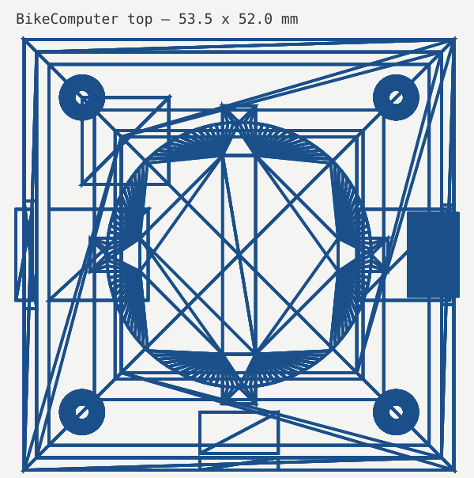
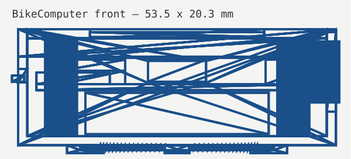
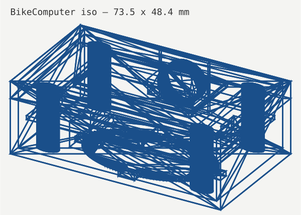

←→ 切页 · M 菜单 · 4 页（表盘/数据/地图/菜单）| 产物 | 文件 |
|---|---|
| FreeCAD 装配体 | cad/out/BikeComputer.FCStd（18 实体）+ .step + .stl |
| 参数化脚本 | cad/build_model.py（freecadcmd 无头执行，退出码 0） |
| 设计文档 | docs/product_spec.md · hardware_design.md · firmware_arch.md |
| 固件骨架 | firmware/ 13 个源文件（HAL/Service/App/Port 分层） |